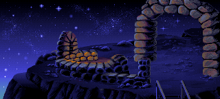
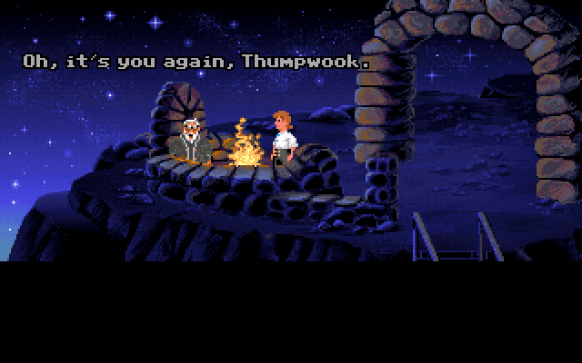
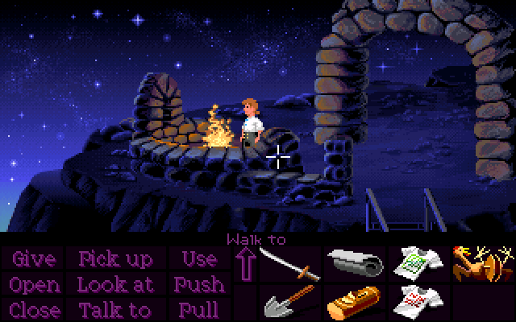
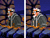

If you go back and talk to the Lookout at least twice, he'll say something like "Oh, it's you again, Thumpwind." However, the actual Threepwood-butchering is generated randomly every time you talk to him!

The algorithm is essentially equivalent to the following pseudocode, where a random string is selected within each set of square brackets:
x = [
threep = [
wood = [
result = threep + wood
By my count, that's 272 unique permutations, though some will be more likely to appear than others. The first syllable will most often be "three" or "thump", because the other options nest a random character within them, making each possibility individually rarer; and the second syllable has a 3/4 chance of ending in "d" and a 1/4 chance of ending in "k".
It's a ridiculously overengineered system that hardly anyone will notice, and I love the game for it.
For the Special Edition, they understandably couldn't make it work with voiceover, so they selected only six variations for Rob Paulsen to read: "Thumpwood", "Thratwook", "Throozwalk", "Thrutwalk", "Threebwalk", and "Threetwink".
Shinetop also uses the exact same system when he catches you at the front door of the mansion.
If you visit Lookout Point after finishing the last trial but before seeing the cutscene on the Dock where Elaine gets kidnapped, the Lookout will actually be missing! Presumably, he's already down there somewhere, ready to show up to hand you LeChuck's note.

It's easy to miss, but if you do see it, it's an unnerving sign that something's not right before you see the Ghost Ship itself. You'll also never see it if you do the thievery trial last, because the cutscene will trigger immediately upon getting out of the water.
SCUMM v4 (floppy versions) and SCUMM v5 (CD version) seem to use slightly different actor scaling algorithms. Most of the time, this isn't really noticable, but in the case of the Lookout (who is actually shown at roughly 94% scale in this scene), he comes out looking noticably different in both versions. In the CD version, he looks almost identical to his full-scale sprite, while in the floppy versions, he's distorted such that the gap between the lenses in his glasses disappears. This makes him appear to be seen from a more side-on perspective, or maybe like he's wearing thick safety goggles or something.
